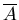

Set
Set Operations
Subjects to be Learned
- union of sets
- intersection of sets
- difference of sets
- complement of set
- ordered pair, ordered n-tuple
- equality of ordered n-tuples
- Cartesian product of sets
Contents
Sets can be combined in a number of different ways to produce another set. Here four basic operations are introduced and their properties are discussed.
Definition (Union): The union of sets A and B, denoted by
A
 B ,
is the set defined as
B ,
is the set defined as
A
B
= { x | x
 A
A
 x
B }
x
B }
Example 1: If A
= {1, 2, 3}
and
B
= {4, 5} ,
then
A
B
= {1, 2, 3, 4, 5} .
Example 2: If A
= {1, 2, 3}
and
B
= {1, 2, 4, 5} ,
then
A
B
= {1, 2, 3, 4, 5} .
Note that elements are not repeated in a set.
Definition (Intersection): The intersection of sets A and B, denoted by
A
B ,
is the set defined as
A
B
= { x | x
A
 x
B }
x
B }
Example 3: If A
= {1, 2, 3}
and
B
= {1, 2, 4, 5} ,
then
A
B
= {1, 2} .
Example 4: If A
= {1, 2, 3}
and
B
= {4, 5} ,
then
A
B
=  .
.
Definition (Difference): The difference of sets A
from B
, denoted by
A
- B ,
is the set defined as
A
- B
= { x | x
A
x
 B }
B }
Example 5: If A
= {1, 2, 3}
and
B
= {1, 2, 4, 5} ,
then
A
- B
= {3} .
Example 6: If A
= {1, 2, 3}
and
B
= {4, 5} ,
then
A
- B
= {1, 2, 3} .
Note that in general
A
- B
 B
- A
B
- A
Definition (Complement): For a set A, the difference
U
- A ,
where U is the universe,
is called the complement of A
and it is denoted by
 .
Thus
is the set of everything that is not in A.
The fourth set operation is the Cartesian product
We first define an ordered pair and Cartesian product of
two sets using it. Then the Cartesian product of multiple sets is defined using
the concept of n-tuple.
Definition (ordered pair):
An ordered pair is a pair of objects with an order
associated with them.
If objects are represented by x and y, then we write the ordered
pair as <x, y>.
Two ordered pairs <a, b> and <c, d> are
equal
if and only if a = c and b = d.
For example the ordered pair <1, 2> is not equal to the ordered pair
<2, 1>.
Definition (Cartesian product):
The set of all ordered pairs <a, b>, where a is an element
of
A and b is an element of B,
is called the Cartesian product of A and B
and is denoted by A
 B.
B.
Example 1:
Let A = {1, 2, 3} and B = {a, b}. Then
A
B
= {<1, a>, <1, b>, <2, a>,
<2, b>, <3, a>, <3, b>} .
Example 2:
For the same A and B as in Example 1,
B
A
= {<a, 1>, <a, 2>, <a, 3>,
<b, 1>, <b, 2>, <b, 3>} .
As you can see in these examples, in general, A
B
B
A
unless A =
,
B =
or A = B.
Note that
A
=
A =
because there is no element in
to form ordered pairs with elements of A.
The concept of Cartesian product can be extended to that of more than two sets.
First we are going to define
the concept of ordered n-tuple.
Definition (ordered n-tuple):
An ordered n-tuple is a set of n
objects with an order
associated with them (rigorous definition
to be filled in).
If n objects are represented by x1, x2,
..., xn, then we write the ordered n-tuple as
<x1, x2, ..., xn> .
Definition (Cartesian product):
Let A1, ..., An be n sets.
Then the set of all ordered n-tuples
<x1, ..., xn> ,
where xi
Ai
for all i,
1
 i
n ,
is called the Cartesian product of
A1, ..., An, and is denoted by
A1
...
An .
i
n ,
is called the Cartesian product of
A1, ..., An, and is denoted by
A1
...
An .
Example 3:
Let A = {1, 2}, B = {a, b} and C = {5, 6}. Then
A
B
C =
{<1, a, 5>, <1, a, 6>, <1, b, 5>,
<1, b, 6>, <2, a, 5>, <2, a, 6>,
<2, b, 5>, <2, b, 6>} .
Definition (equality of n-tuples):
Two ordered n-tuples
<x1, ..., xn> and
<y1, ..., yn>
are equal if and only if
xi = yi for all i,
1
i
n .
For example the ordered 3-tuple <1, 2, 3>
is not equal to the ordered n-tuple <2, 3, 1>.
Test Your Understanding of Set Operations
Next -- Properties of Set Operations
Back to Schedule
Back to Table of Contents